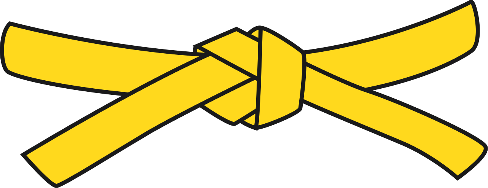

Här kommer graderingen inom karaten
Det finns många olika typer av kampsport, var och en med sitt eget system och arrangemang. Där ordningen börjar från nybörjare till erfarna, och vissa av dessa sporter har färgade bälten, färgerna på bältena varierar från en karateskola till en annan. Vissa kampsporter har inte ens bälten, medan andra bara har vita och svarta bälten.Men karateskolor har vanligtvis många färger för att beteckna elevernas framsteg från en nivå till en annan.
| Karate bältesföljd | Färg |
|---|---|
| Svart (dan) | |
| Brunt (3:e, 2:a och 1:a kyū) | |
| Blått (5:e och 4:e kyū) | |
| Grönt (6:e kyū) | |
| Orange (7:e kyū) | |
| Gult (8:e kyū) |  |
| Rött (9:e kyū) | |
| Vitt (10:e kyū) |